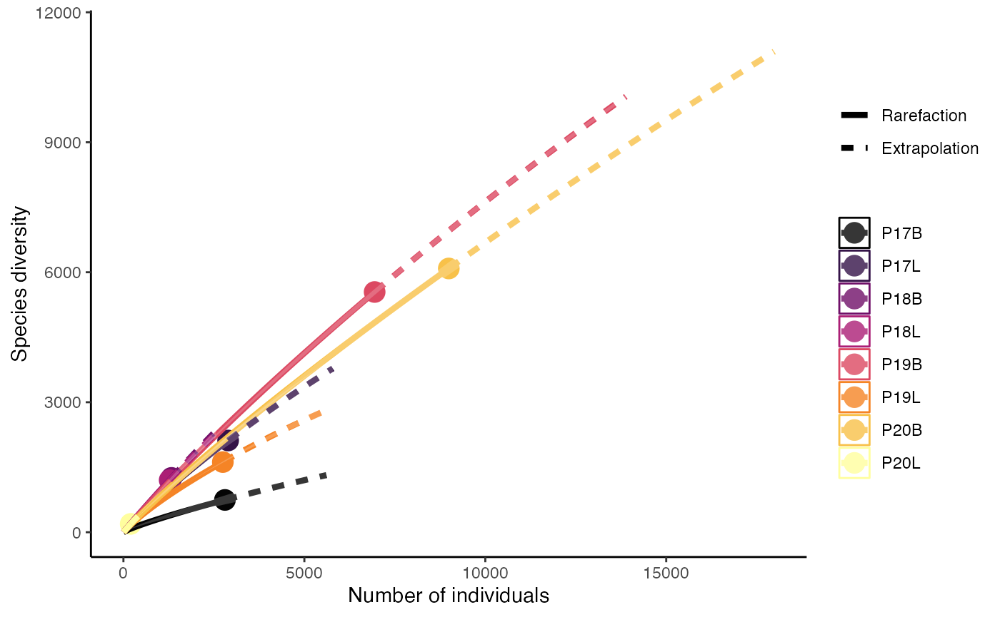
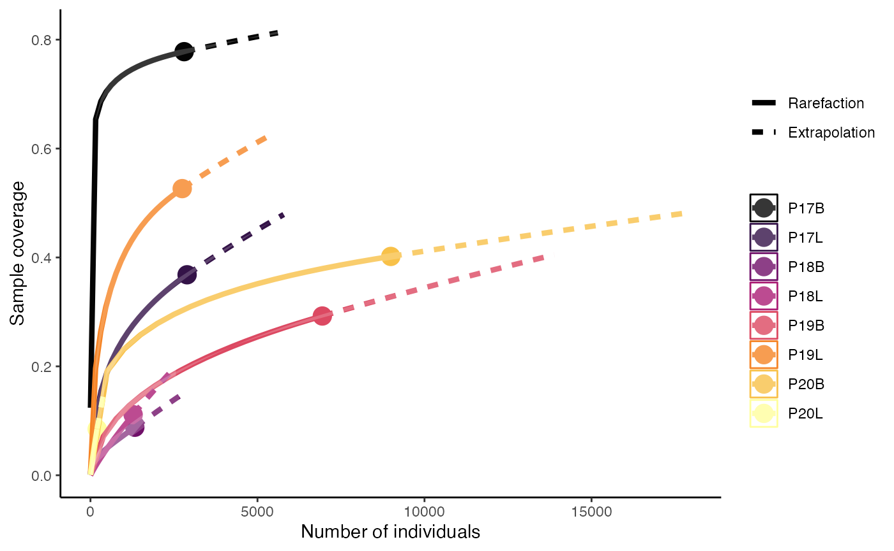
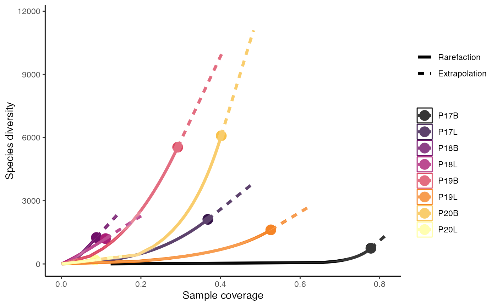
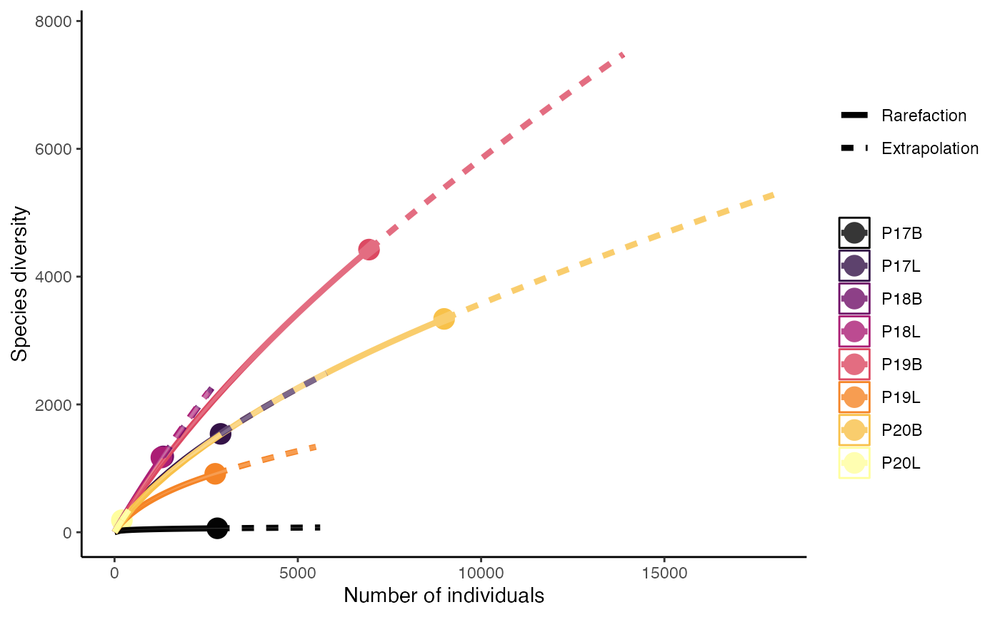
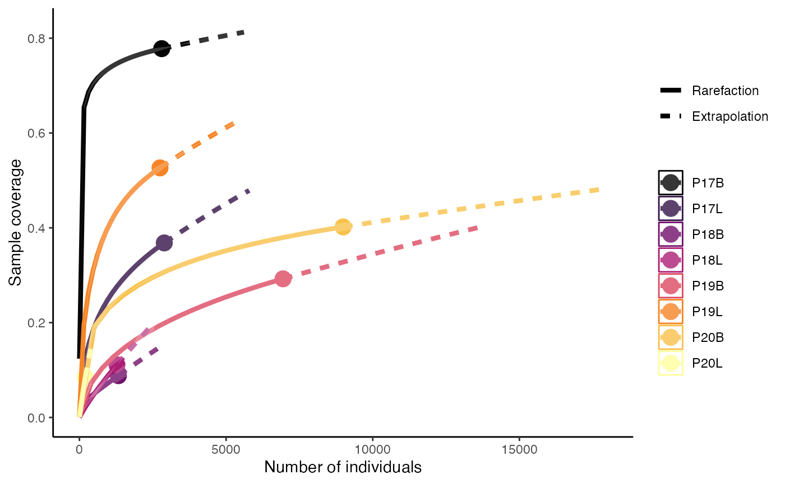
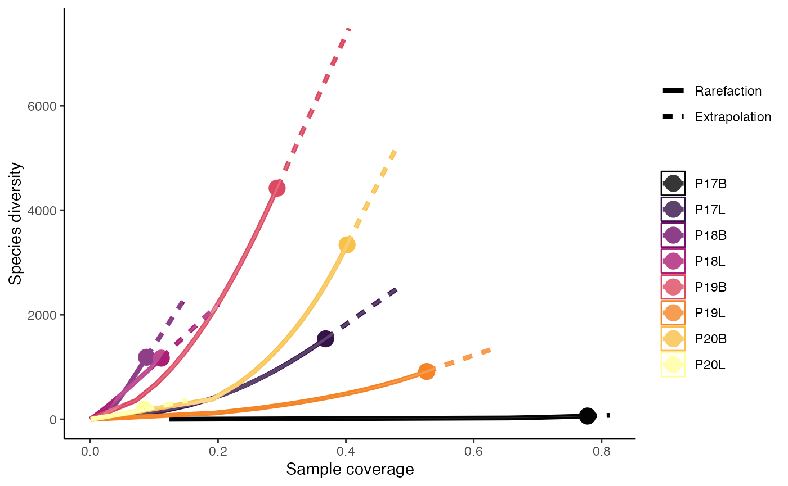
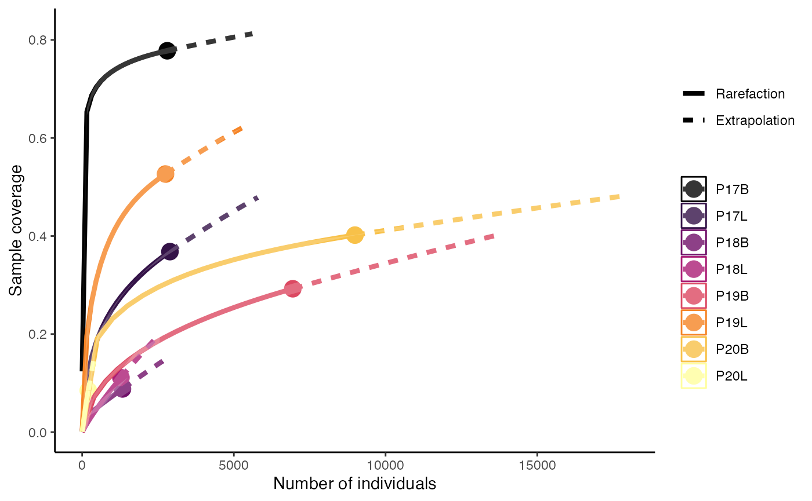
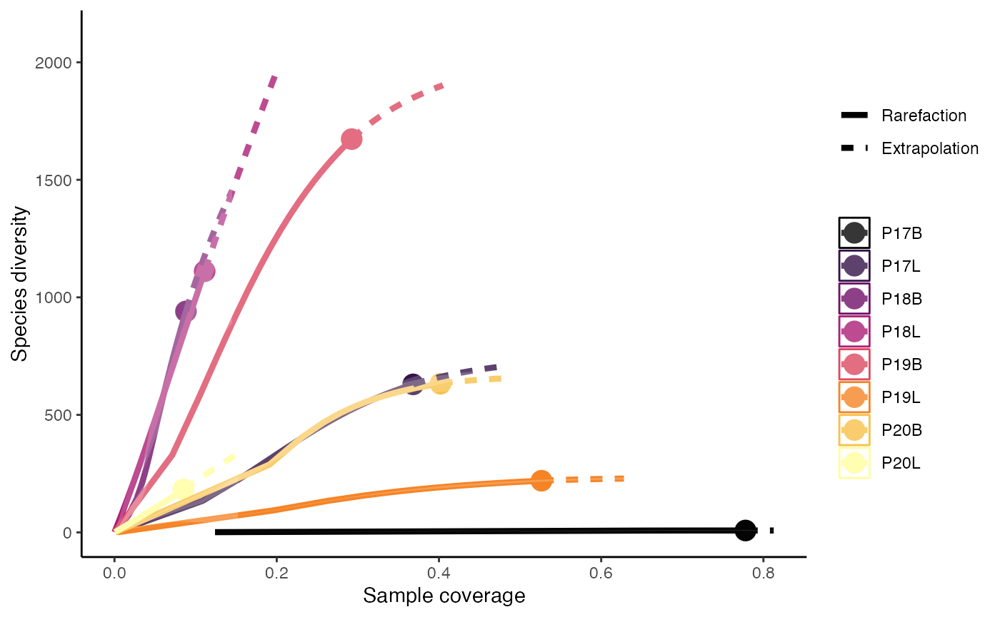

Clonal Rarefaction and Extrapolation
Compiled: October 24, 2023
Clonal_Rarefaction.RmdclonaRarefaction
We can also use Hill numbers to estimate the rarefaction, or estimating species richness, using the the abundance of clones across groupings. Underlying the rarefaction calculation is the use of observed receptor of abundance to compute diversity.
hill.numbers + 0 - species-richness
+ 1 - Shannon
+ 2 - Simpson
plot.type
+ 1 - sample-size-based rarefaction/extrapolation
+ 2 - sample completeness curve
+ 3 - coverage-based rarefaction/extrapolation curve
This relies on the iNEXT with the accompanying manuscript. Like the other wrapping functions in scRepetoire, please cite the original work.
Rarefaction using Shannon Diversity (q = 0)
clonalRarefaction(combined.TCR, plot.type = 1, hill.numbers = 0, n.boots = 2)
clonalRarefaction(combined.TCR, plot.type = 2, hill.numbers = 0, n.boots = 2)
clonalRarefaction(combined.TCR, plot.type = 3, hill.numbers = 0, n.boots = 2)
Rarefaction using Shannon Diversity (q = 1)
clonalRarefaction(combined.TCR, plot.type = 1, hill.numbers = 1, n.boots = 2)
clonalRarefaction(combined.TCR, plot.type = 2, hill.numbers = 1, n.boots = 2)
clonalRarefaction(combined.TCR, plot.type = 3, hill.numbers = 1, n.boots = 2)
Rarefaction using Simpson Diversity (q = 2)
clonalRarefaction(combined.TCR, plot.type = 1, hill.numbers = 2, n.boots = 2)
clonalRarefaction(combined.TCR, plot.type = 2, hill.numbers = 2, n.boots = 2)
clonalRarefaction(combined.TCR, plot.type = 3, hill.numbers = 2, n.boots = 2)